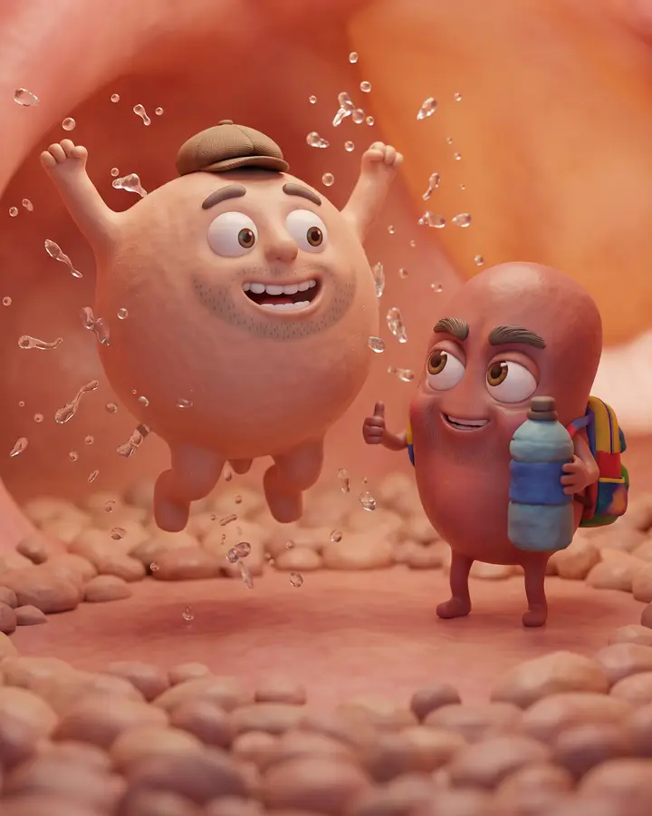
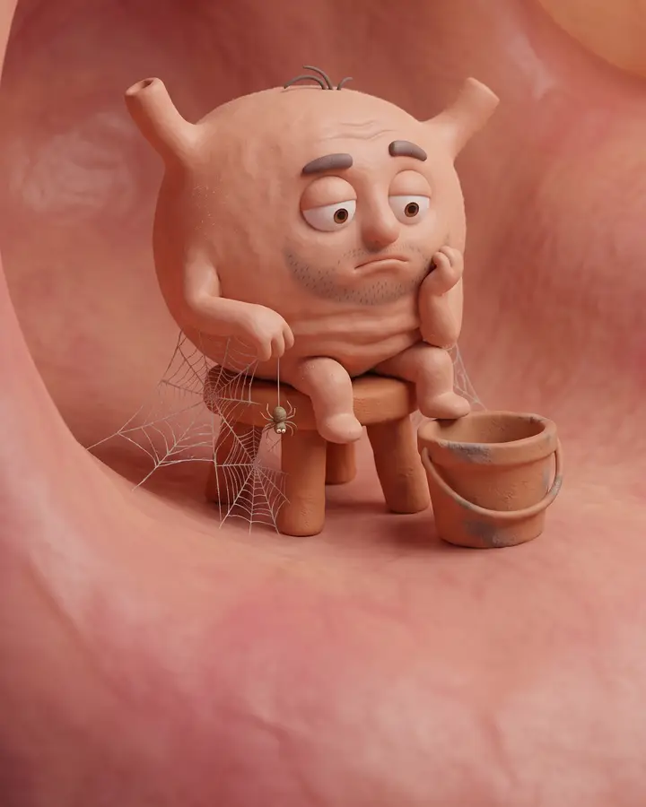
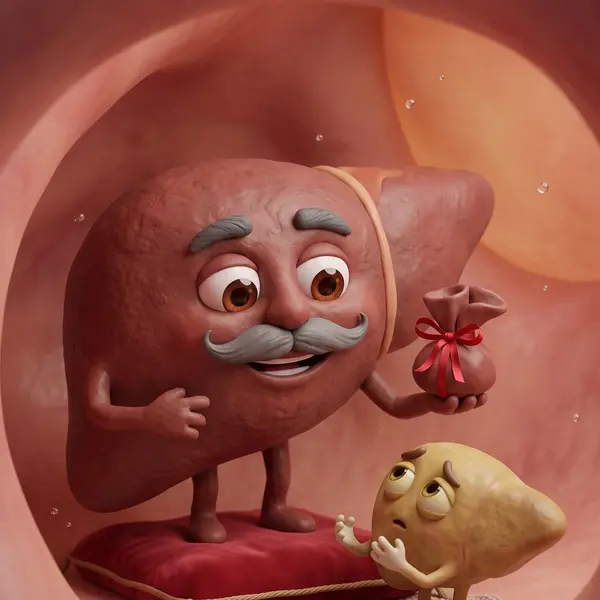
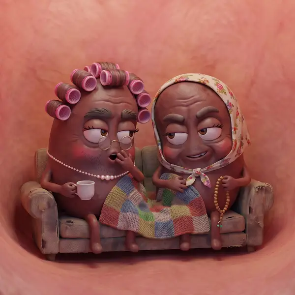
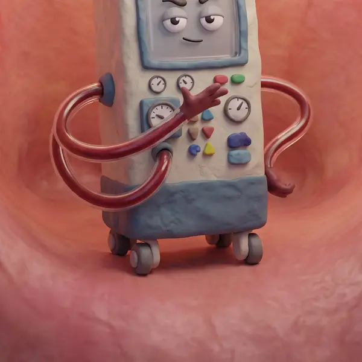
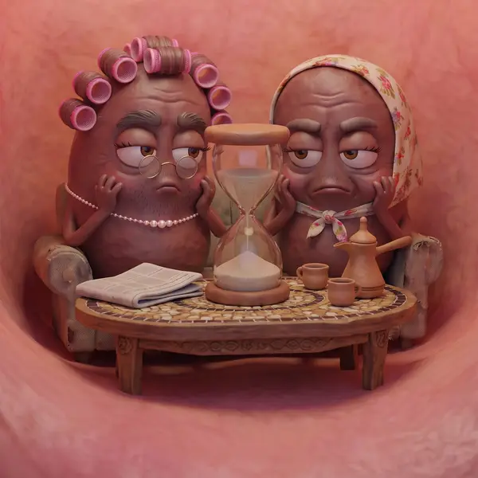
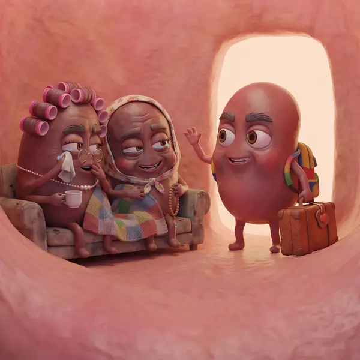
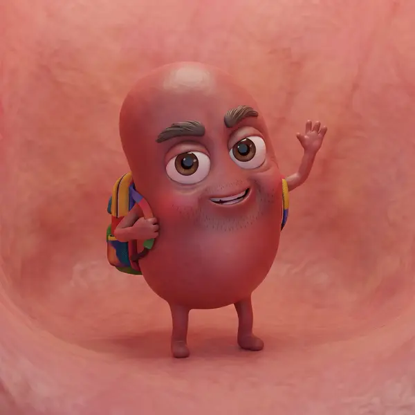

Navigation
Body map menu
Visitors tap an organ to find everything about it. The characters they already know from the videos sit where the organs are.
For the developer
- The figure is one inline SVG. The 8 characters are round buttons placed with % positions, so it scales on any screen.
- Each chip becomes a link to the matching posts, FAQs and guides on the site.
- Buttons carry labels and
aria-pressed, so screen readers can use the map. The red tube is a dashed SVG line with a movingstroke-dashoffset.
Animation
Before and after slider
Drag across the picture to go from the dialysis years to life after the transplant.


On dialysis After transplantEmpty for years on dialysis. Full and jumping after the transplant.
For the developer
- Two same-size images stacked. The top one is cut with
clip-path: inset(0 calc(100% - var(--pos)) 0 0). - Pointer events with
touch-action: pan-y: dragging sideways moves the slider, swiping up still scrolls the page. Arrow keys work on the handle. - The handle sweeps once when the slider first comes into view, to show it can be dragged.
Scrolling
Story timeline
As visitors scroll, a line fills like an IV drip and each moment lights up.

2006
Dad's liver
Dad gives me part of his liver.

Kidney failure
Wadad and Souad get tired
The old kidneys slow down, then stop.

Dialysis
Years in the chair
Hours on the machine, and a tiny cup of water a day.

The wait
No number to wait for
Nobody publishes waiting times. Everyone asks their neighbour.

13 June 2024
Amine's kidney
My brother gives me his kidney.

Now
Life after
Blood tests, 3 litres of water a day, and sharing all of it here.
Check the steps and dates before this goes live.
Numbers that count up
They count up once when they come into view.
For the developer
- The line fill follows scroll position with one small script (
requestAnimationFrame). - Cards slide in with CSS scroll-driven animations (
animation-timeline: view()) where supported, and simply show where not. - Counters run once, when the row is 60% visible.
Ground rules
Gentle for patients
- Motion switches off when a phone is set to Reduce Motion. This page already does it.
- No flashing or shaking. Many visitors are unwell or tired.
- The medical notice stays visible: information only, my experience, not medical advice.
- Small images and CSS animation, so pages open fast on mobile data.
- Arabic and English get every feature.